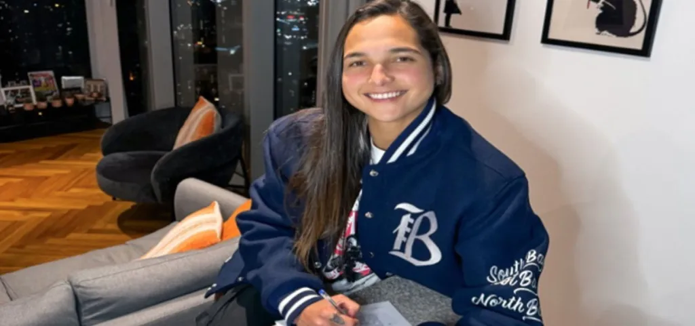
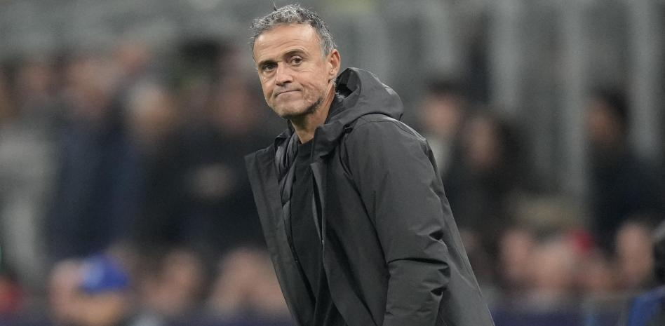
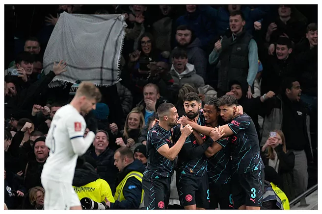
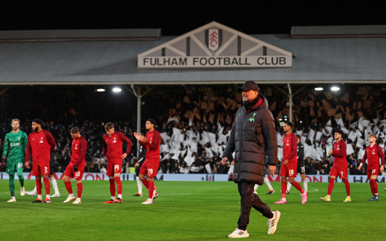

bienvenida
Hola, Bienvenidos a MataCenteno tu sitio web del fútbol
mundial.
Espero que tu visita a ésta plataforma sea de lo más
placentera y
quiero que sepas que siempre seras bienvenido

Noticias
Deyna Castellanos jugará en el Bay FC de la ciudad de San Francisco en los Estados Unidos
Luis Enrique quiere a De Light para su saga central, a pesar de la negación del Bayern Munich de desprenderse del jugador
Manchester City elimina a Tottenham de la FA CUP con polémico gol de Nathan Ake
Jurgen Klopp se tomará un largo descanso después de haber sido DT del Liverpool por casi diez años

Preolimpico 2024
Tabla de posiciones
Grupo A
- Ecuador: 7 ptos
- Brasil: 6 ptos
- Venezuela: 2ptos
- Bolivia: 1 pto
- Colombia: 0 pto
Grupo B
- Argentina: 4 ptos
- Paraguay: 4 ptos
- Peru: 3 ptos
- Uruguay: 0 ptos
- Chile: 0 ptos
Proximos partidos:
Lunes 29 de enero:
- Brasil vs Ecuador. Hora venezolana: 16:00
Estadio Brigido Iriarte Caracas - Colombia vs Venezuela Hora venezolana: 19:00
Estadio Brigido Iriarte Caracas
Partidos para el fin de semana
Partidos del sabado 27/01/2024
Hora 11 am hora venezolana: SHU vs Brighton
Hora 13:30 pm hora
venezolana: Barcelona FC vs Villarreal
Hora 15:00 pm hora venezolana: Fulham vs Newcastle
Hora 15:45 pm hora venezolana: Milan vs Bologna
Partidos del domingo 28/01/2024
Hora 10:30 am hora venezolana: Liverpool vs Norwich city
Hora 12:30 pm hora venezolana: Newport County vs Manchester united
Hora 12:30 pm hora venezolana: Borussia Dortmund vs Bochum
Hora 13:00 pm hora venezolana: Lazio vs Napoli
Hora 15:45 pm hora venezolana: Fiorentina vs Inter de Milan
Futbolistas del ayer
Ronaldo de Assis Moreira: Mejor conocido como Ronaldinho Gaucho, en mi opinión uno de los mejores jugadores de la historia del Barcelona F.C.. Era un jugador muy técnico incluso mejor que Messi o Ronaldo el gordo, tenía el balón pegado al pie y hacía los pases viendo hacia otro lado. Era el verdadero crack brasileño, de esos que ya no se ven. Se echaba el equipo encima y fue uno de los mentores y ejemplos a seguir de Leo Messi.
Ronaldinho ganó mundial de futbol Corea Japón 2002, Champions League 2006 con el Barcelona F.C., ganó la Copa Libertadores de América con el Atletico Mineiro y bueno más trofeos. Un jugador sin igual, uno de los mejores y uno de los peores enemigos del Madrid, ya que en los Clasicos, siempre Ronaldinho se lucía. Siempre tendré en mi memoria el golazo que le hizo al Madrid, y de como los aficionados madridistas le aplaudían, así de bueno era Ronaldinho Gaucho